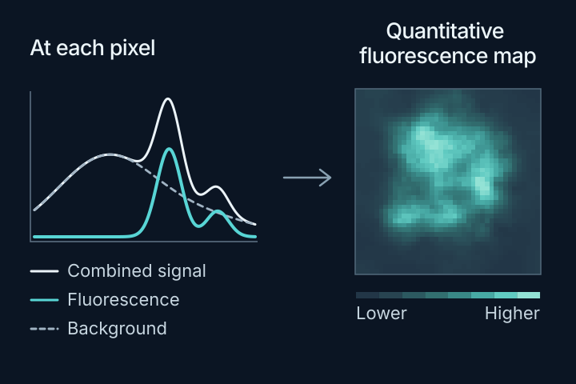

Exoscope
The OncoLight imaging head integrates with an articulated robotic arm to capture high-resolution color and hyperspectral images simultaneously in real time as part of the surgical workflow.
Optical fingerprinting for surgery
At OncoLight, we combine real-time hyperspectral sensing with our own image-processing algorithms to map the optical and molecular fingerprints of tissue, including fluorescence that can be difficult to see in the OR.
The clinical need
Our initial focus has been glioma surgery, where the visible glow can fade as tumor cells extend into surrounding brain.
For a surgeon working near pathways for speech or movement, that uncertain edge matters. Blood absorbs light, tissue scatters it, and the tissue’s own fluorescence can obscure a weak signal.
Our mission
Two areas of brain can look alike under white light yet have different optical fingerprints. We’re building tools that pair the familiar color image with maps of white-light reflectance in unlabeled tissue, tissue autofluorescence, and fluorescence from agents such as 5-ALA–induced PpIX and ICG. Together, these views can show where a faint signal begins, changes, or fades across normal and pathologic tissue that looks much the same to the eye.
Explore the imaging science
Surgical platforms
We’re developing real-time imaging tools around the instruments surgeons already use to see the operative field.
The OncoLight imaging head integrates with an articulated robotic arm to capture high-resolution color and hyperspectral images simultaneously in real time as part of the surgical workflow.
Our hyperspectral module couples to the optical path of existing commercial surgical microscopes. It is designed to capture spectral images in real time while the surgeon continues to work through the microscope.
We’re developing a real-time hyperspectral imaging platform for endoscopic and laparoscopic procedures.
Leadership
OncoLight grew out of academic research at the University of Texas Medical Branch and Rice University. The surgeons and engineers who developed the imaging methods founded the company to bring them into the operating room.
Our story and team


Academic origins
OncoLight’s neurosurgeons and imaging engineers draw on peer-reviewed studies of faint fluorescence in glioma surgery. Measurements of how tissue absorbs and scatters light guide the design of our sensors and the algorithms we use to map fluorescence across the surgical field.

Academic research · 2022
Principal Investigator / Program Director
CPRIT awarded the Early Clinical Investigator grant to the University of Texas Medical Branch at Galveston (UTMB).
View academic award RP220581Product development · 2026
CPRIT approved a $1.8 million seed award to OncoLight for development of its surgical imaging platform. The award is pending contract negotiation.
View company award DP270283